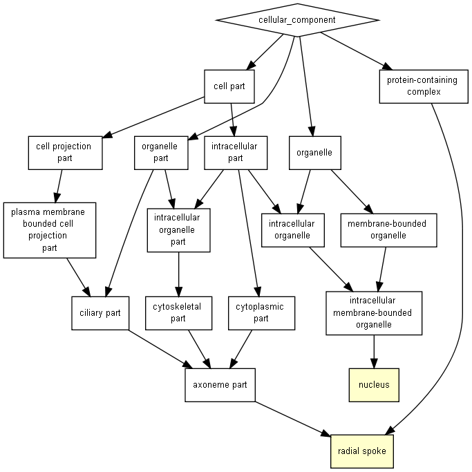

P-value color scale
| > 10-3 |
10-3 to 10-5 |
10-5 to 10-7 |
10-7 to 10-9 |
< 10-9 |

| GO term |
Description |
P-value |
FDR q-value |
Enrichment (N, B, n, b) |
Genes |
| GO:0005634 |
nucleus |
1.42E-4 |
2.73E-1 |
2.55 (18319,5193,18,13) |
[+] Show genes
PRDM2 - pr domain containing 2, with znf domain
GZF1 - gdnf-inducible zinc finger protein 1
RBM10 - rna binding motif protein 10
TTBK1 - tau tubulin kinase 1
PELP1 - proline, glutamate and leucine rich protein 1
APLP2 - amyloid beta (a4) precursor-like protein 2
MYT1 - myelin transcription factor 1
HUWE1 - hect, uba and wwe domain containing 1, e3 ubiquitin protein ligase
PATL2 - protein associated with topoisomerase ii homolog 2 (yeast)
EHMT2 - euchromatic histone-lysine n-methyltransferase 2
RSPH4A - radial spoke head 4 homolog a (chlamydomonas)
KAT6B - k(lysine) acetyltransferase 6b
SCAF1 - sr-related ctd-associated factor 1
|
| GO:0001534 |
radial spoke |
9.83E-4 |
9.44E-1 |
1,017.72 (18319,1,18,1) |
[+] Show genes
RSPH4A - radial spoke head 4 homolog a (chlamydomonas)
|
Species used: Homo sapiens
The system has recognized 19367 genes out of 20100 gene terms entered by the user.
19367 genes were recognized by gene symbol and 0 genes by other gene IDs .
190 duplicate genes were removed (keeping the highest ranking instance of each gene) leaving a total of 19177 genes.
Only 18319 of these genes are associated with a GO term.
The GOrilla database is periodically updated using the GO database and other sources.
The GOrilla database was last updated on Jun 23, 2018
This results page will be available on this site for one month from now (until
Jul 25, 2018
). You can bookmark this page and come back to it later.
'P-value' is the enrichment p-value computed according to the mHG or HG model. This p-value is not corrected for multiple testing of 1922 GO terms.
'FDR q-value' is the correction of the above p-value for multiple testing using the Benjamini and Hochberg (1995) method.
Namely, for the ith term (ranked according to p-value) the FDR q-value is (p-value * number of GO terms) / i.
Enrichment (N, B, n, b) is defined as follows:
N - is the total number of genes
B - is the total number of genes associated with a specific GO term
n - is the number of genes in the top of the user's input list or in the target set when appropriate
b - is the number of genes in the intersection
Enrichment = (b/n) / (B/N)
Genes: For each GO term you can see the list of associated genes that appear in the optimal top of the list.
Each gene name is specified by gene symbol followed by a short description of the gene
Back to the GOrilla main page